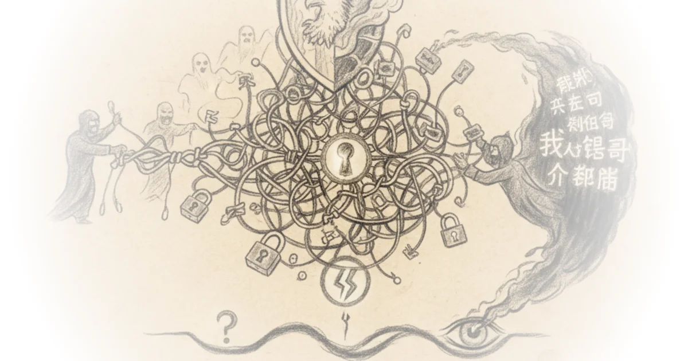

In a rare moment of alignment between federal security agencies and privacy advocates, the Cybersecurity and Infrastructure Security Agency (CISA) has issued a stark warning: stop using personal Virtual Private Networks. The Hated One seizes on this contradiction to argue that while the government is technically correct about the risks, their advice misses the deeper reality of digital surveillance. This piece cuts through the noise of typical tech coverage to expose why the very tools designed to protect us might actually be making us more vulnerable.
The Paradox of Trust
The Hated One opens by highlighting the irony of the federal government suddenly endorsing end-to-end encryption after decades of lobbying for backdoors. "When the US intelligence tells you anything there is a 50/50 chance the opposite might be correct," they write, noting that the administration is now seeking "moral redemption" following a massive breach where Chinese hackers exploited law enforcement backdoors to access US telecommunications. This framing is crucial because it contextualizes the new advice not as a sudden enlightenment, but as a desperate reaction to a catastrophic failure of the "good guys only" encryption model.

The core of the argument rests on the idea that a backdoor for law enforcement is indistinguishable from a vulnerability for criminals. The Hated One observes that the FBI still shields for encryption backdoors, insisting that only US law enforcement should access them, yet admits that "one man's back door is another man's vulnerability." This admission validates the long-standing warnings of privacy advocates: you cannot create a secure channel that only the government can enter without also creating a channel that everyone else can enter.
One man's back door is another man's vulnerability.
The Illusion of the Encrypted Tunnel
The commentary then dissects CISA's specific claim that personal VPNs "simply shift residual risks from your internet service provider to the VPN provider often increasing the attack surface." The Hated One agrees with the technical assessment but challenges the strategic implication. They explain that while a VPN hides your traffic from your Internet Service Provider (ISP), it merely hands that same data over to the VPN provider, who can see your original IP address and all your browsing history. "VPNs are all about trust and that's a fundamental flaw of a technology that quite frankly was never even designed for privacy at all," the author argues.
This section effectively dismantles the marketing hype surrounding commercial VPNs. The Hated One points out that most sponsored recommendations on tech channels are driven by affiliate deals rather than security audits, noting that "virtually all vpns I've seen sponsored on YouTube have no proven record of actually protecting your data." They highlight the consolidation of the industry, where a handful of parent companies own dozens of brands, and some founders have ties to intelligence communities. Critics might note that for the average user, a reputable commercial VPN still offers better protection against ISP data harvesting than no VPN at all, but The Hated One insists that without rigorous vetting, the user is just trading one data broker for another.
Beyond the IP Address
The most valuable insight in the piece comes when The Hated One distinguishes between corporate and personal use cases. CISA correctly notes that VPNs are excellent for organizations to secure proprietary data, but the author argues this is irrelevant to individual privacy. "The company doesn't care about privacy of their workers here so they benefit from the ability to monitor all traffic of their employees on the company VPN but that's all for company needs not for personal privacy needs," they write.
Instead of relying on a single tool, the author advocates for a holistic approach to digital hygiene. They argue that hiding an IP address is a "minor data point" in a sea of tracking cookies, usage patterns, and account data. To be truly private, one must minimize their data footprint by switching to privacy-respecting services like Proton Mail, Signal, and DuckDuckGo, and using email aliases to compartmentalize identities. The Hated One suggests that only after these foundational steps are taken does a VPN become a useful layer of defense, rather than a false sense of security.
Surrendering your browser records and all online activities to your internet service provider is always going to result in your privacy being violated.
The Verdict on Tools
The author concludes by identifying a narrow path forward, naming only a few providers that meet their strict criteria for trust, such as Mullvad and ProtonVPN, due to their no-log policies, RAM-only infrastructure, and favorable legal jurisdictions. They emphasize that using multiple providers to hop between them can further obscure activity. This nuanced stance—rejecting the binary of "VPN good" or "VPN bad" in favor of a specific, high-trust implementation—offers a practical roadmap for those willing to do the work.
Bottom Line
The Hated One's strongest contribution is reframing the VPN debate from a technical feature list to a question of trust architecture, correctly identifying that shifting data from an ISP to a VPN provider is often a lateral move at best. The argument's vulnerability lies in its high barrier to entry; the comprehensive privacy setup they recommend requires significant technical literacy that many users lack. However, the piece succeeds in its primary goal: proving that the government's sudden endorsement of encryption is a reaction to their own policy failures, and that true privacy requires more than just flipping a switch.
The US government is technically correct in all statements about VPN but strategically I think the US government is still wrong.